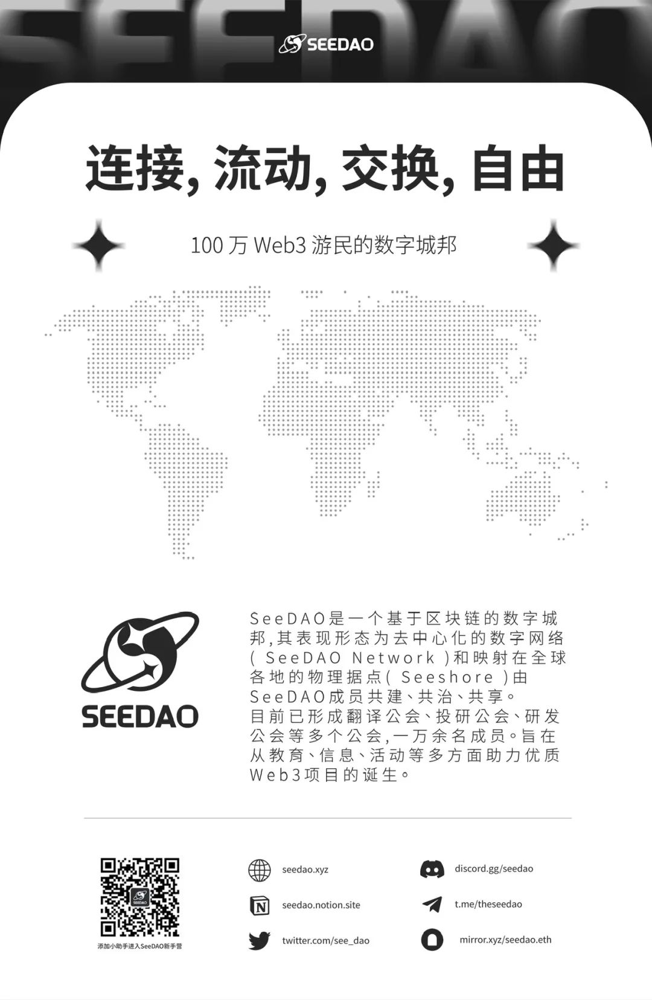
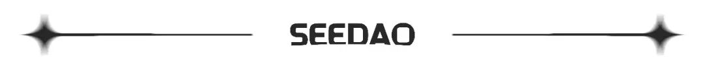

2023 年 11 月，SeeDAO 成立两周年。
在这两年时间里，SeeDAO 的社区成员已经发展至 1.2 万人，贡献者超过 2000 人，核心贡献者接近 550 人。
本周，经过三个月时间的讨论、写作、修改，经由节点投票生效后，SeeDAO 白皮书终于问世了。
白皮书的诞生，总结了自 2021 年 11 月至 2023 年 9 月，整个 SeeDAO 社区的实践，最终所追求的意义指向 —— 基于区块链构建一个以追求 “好的生活” 为目的的数字城邦。
为了更好地呈现城邦的发展，让大家更好地认识 SeeDAO 以及 SeeDAO 的生态与核心贡献者，我们计划在 2023 年 11 月中旬 Devconnect 期间，于土耳其伊斯坦布尔举办 SeeDAO 生态发布会。
这场聚会的主题为 “Our Polis（我们的城邦）”。
这一年我们以蜕变的速度在快速成长着。从年初数字城邦战略的提出，到 2 月 DAO Denver 大会的密集交流，许多海外 DAO 组织开始关注 SeeDAO 的去中心化实践。4 月 DAO Hongkong 大会和 SeeDAO 香港聚会的成功举办，证实了我们对 DAO 赛道的深刻理解和极强的热点把握能力。5 月的 DAO 黑山大会更是让我们与全球的 DAO 建设者展开了深刻的交流，西方社区惊讶于 SeeDAO 在去中心化组织的探索上竟然已经做出了如此多超前的尝试。这一次随着 SeeDAO 白皮书的发布以及城邦公链的战略公布，SeeDAO 去中心化组织的探索实践又向前迈进了一大步。
From DAO to Polis，从叙事到生态，两周年之际，我们将在土耳其这个中西交界的完美结合点，向聚集到伊斯坦布尔的 Web3 BUIDLER 们，展示 SeeDAO 数字城邦的现有生态。
根据 SIP-108 提案投票，”Our Polis” 项目组成立，确定 SeeDAO 城市联络人计划负责人 Grace 为本次活动的统筹人。
提案链接：
https://forum.seedao.xyz/thread/46409
招募启事
本周 “Our Polis” 项目组快速推进了团队搭建工作，目前仍有一些岗位正在进行招募，我们希望找到同频的伙伴加入，与我们一起策划落地这场意义重大的两周年发布活动！
正在招募的岗位：
1. 会务负责人
职能：
会场选择，供应商对接
发布活动页面以及活动宣传站内信
会场布置，舞台效果设计
现场志愿者团队管理
活动参与者体验设计
财务支付与报销、激励总结与提交
住宿推荐及伊斯坦布尔出行建议
要求：
有规模 100 人以上的大会会务组织经验
英文流利，能够流畅对接土耳其场地及其他供应商
11 月中旬在伊斯坦布尔，可以进行现场会务对接
激励：1000U+10000 积分
2. 英语翻译
职能：
网站翻译
SeeDAO 两周年生态报告翻译
活动宣传文案翻译
嘉宾精彩观点集锦翻译
要求：
英语翻译功底扎实
能根据活动宣发时间要求及时完成翻译
激励：300U+3000 积分
3. 主持人
职能：
大会现场主持
要求：
对 Web3 行业有较强的专业认知
形象大方，谈吐得体，有较强的主持技巧及场控能力
对 SeeDAO 有一定的了解
激励：300U+3000 积分
现场志愿者将于 10 月下旬开启招募。
当前项目组成员
Grace：统筹人
Jason：议程负责人
Shawn / 白鱼 / 唐晗：生态对接
唐晗：宣传负责人
文倩：记者
Marcus：设计
Jialin：外联合作
白鱼：网站发布
Vincent：Twitter 宣发及线上活动、物料 / 周边负责人
报名方式
如果你有兴趣加入项目组，请通过如下报名链接或者扫码进行报名：
https://forms.gle/msMS6JVprRLv3GCq7
报名截止时间：2023 年 10 月 6 日

关于 Devconnect・Istanbul
2023 年 11 月 13 日 - 19 日在土耳其伊斯坦布尔举行的 Devconnect・Istanbul ，是一个为期一周的以太坊开发者大会，活动将就以太坊的热门话题进行讨论，主题包括去中心化系统、可扩展性、隐私、激励机制、MEV、用户体验、治理等，可在活动期间与以太坊开发人员进行讨论。
主办机构：Ethereum Foundation
以太坊基金会（EF）是一个致力于支持以太坊和相关技术的非营利组织，职责是将资源分配给关键项目，成为以太坊生态系统中的重要声音，并向外界宣传以太坊。目前众多的以太坊生态活动中，仅有 Devcon 和 Devconnect 由以太坊基金会主办，其余活动皆由以太坊社区主办。
官方活动日程表：
https://devconnect.org/schedule
11 月金秋，与你相约
伊斯坦布尔见！
内容来源 | “Our Polis” 项目组
排版 | INES
审核 | ines

